context engineering
ante kapetanovic · devdays 2026
you familiar with this situation?
> you work with a coding agent
> all goes well, 1000 lines of code
> still great, 10000 lines of code
> tests pass 🤘
> "let me just do a small tweak"
> code doesn't compile
> "think harder!!1"
> 1000 lines of code more
> same error
> coding agent says the magic words:
"You're absolutely right."
you've experienced
this has nothing to do with
a model itself because...
llms are capable
artificial analysis intelligence index
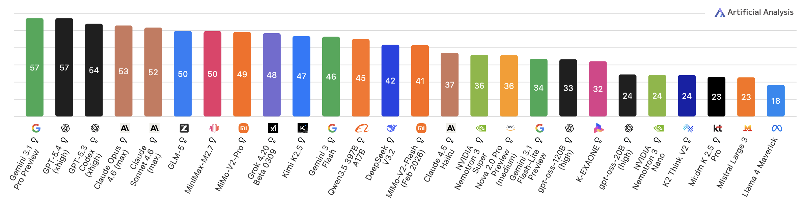
Artificial Analysis, "LLM Benchmarks", artificialanalysis.ai, 2025
artificial analysis agentic index
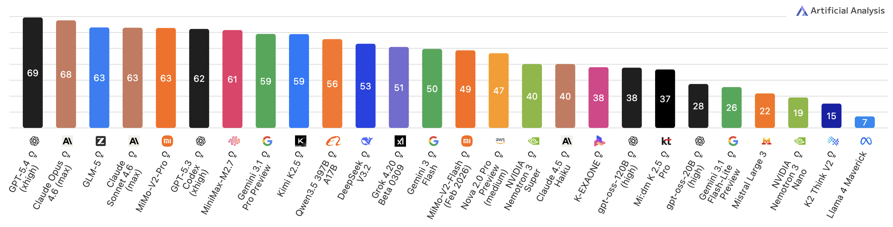
Artificial Analysis, "LLM Benchmarks", artificialanalysis.ai, 2025
artificial analysis coding index
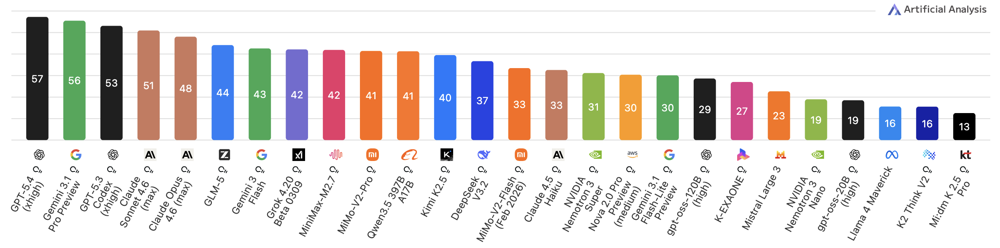
Artificial Analysis, "LLM Benchmarks", artificialanalysis.ai, 2025
all of them very capable and
indistinguishable* for day-to-day tasks
*prove me wrong ¯\_(ツ)_/¯
even small open-weight models
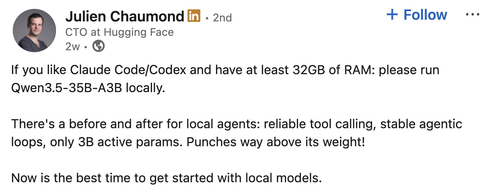
Chaumond, "Qwen 3.5 Post", LinkedIn, 2025
running locally on my laptop
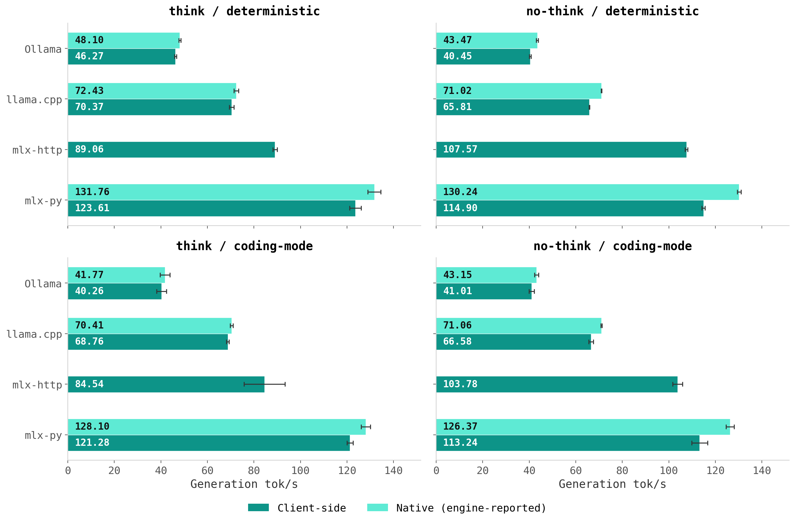
Kapetanovic, "Qwen 3.5 Apple Silicon Benchmark", antekapetanovic.com, 2026
what determines how well
they perform is the context
software engineers
↓
context engineers
what is context engineering?
"designing, structuring, and providing precise, relevant information to an LLM"
Anthropic, "Context Engineering" docs, 2025
"strategies for curating and maintaining the optimal set of tokens"
Elastic Engineering Blog, 2025
"the job of figuring out what should be in the context window"
Latent Space / Chroma Research, 2025
HOW information is presented
matters more than what
context engineering is
the art of avoiding
context rot
how did we get here?
the seven layers of (the most recent) AI progress
2020-22
GPT-3, powerful autocomplete, context management didn't matter much
2022
chatGPT, rlhf, the "copy-paste" era, context is cheap
2023
chain-of-thought and "think step by step," better answers, but still short context
2023
function calling, apis, models touch the real world
2023-24
reason + act, copilot, code completion, iterative tool calls fill the window
2024-25
cursor, claude code, "vibe" coding, multi-file edits, test runs, mcp servers
we are here
2025-26
spec-driven dev, ralph loops, get-shit-done, tons of skills, memory, scheduling
the inflection point
scope explosion, context became the bottleneck
what fills a context window?
system prompt, tool schemas, conversation history, tool results, agent scratchpad
attention is O(n²), double the context, 4x the compute
KV cache grows linearly per layer
the window is finite and expensive,
and it fills fast
persistence feeds on tokens
stage 1: fresh start
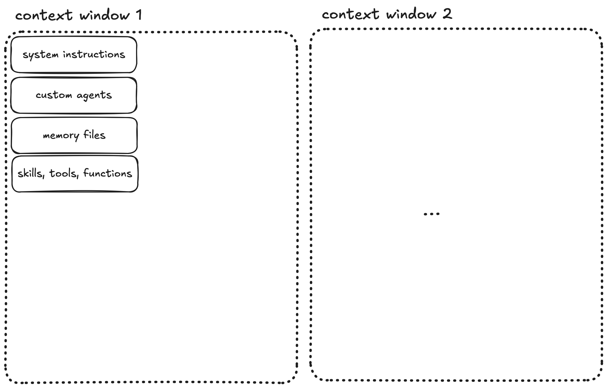
stage 2: conversation begins
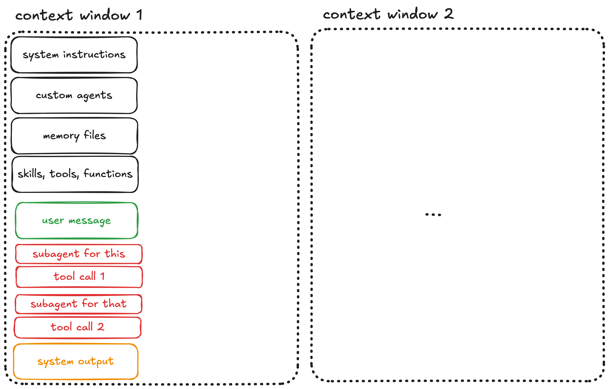
stage 3: agent steering
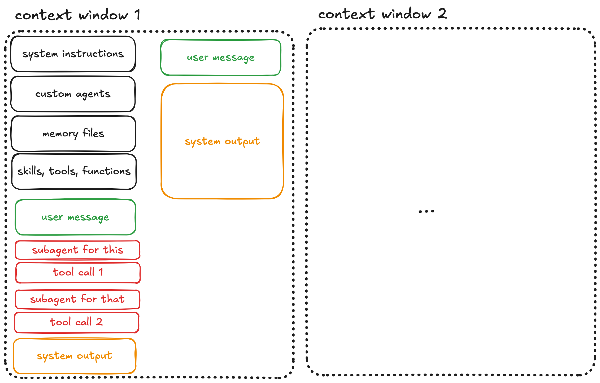
stage 4: the dumb zone
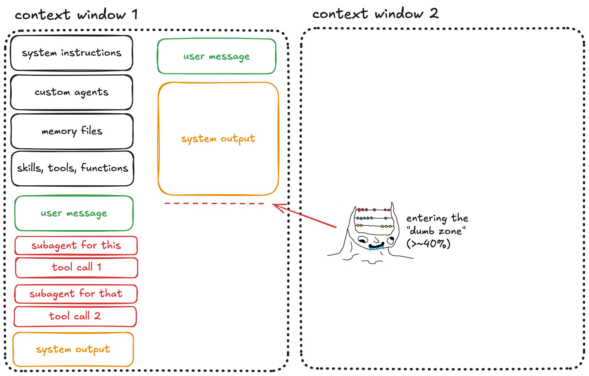
chroma's findings

Chroma, "Context Rot", technical report, 2025
stage 5: compaction triggered
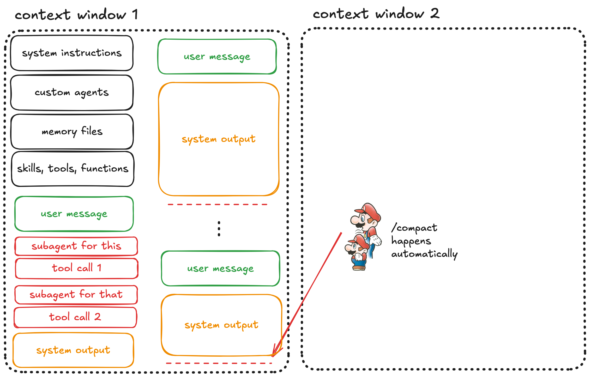
stage 6: the compaction trap
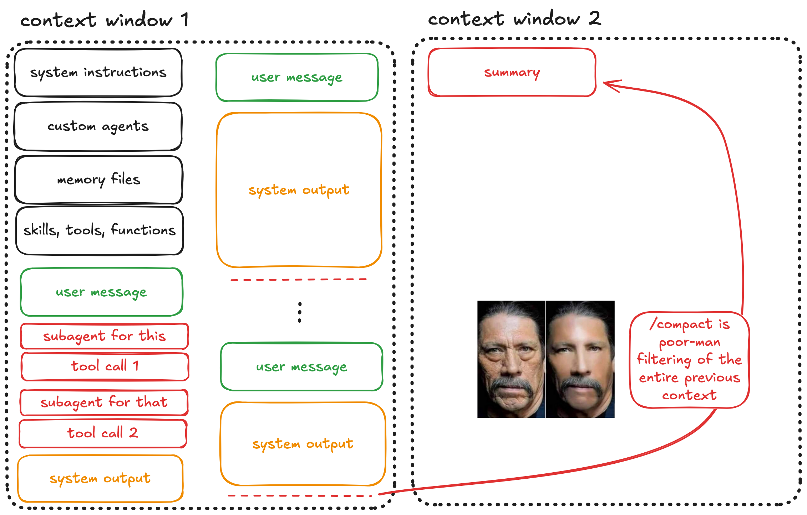
stage 7: second window
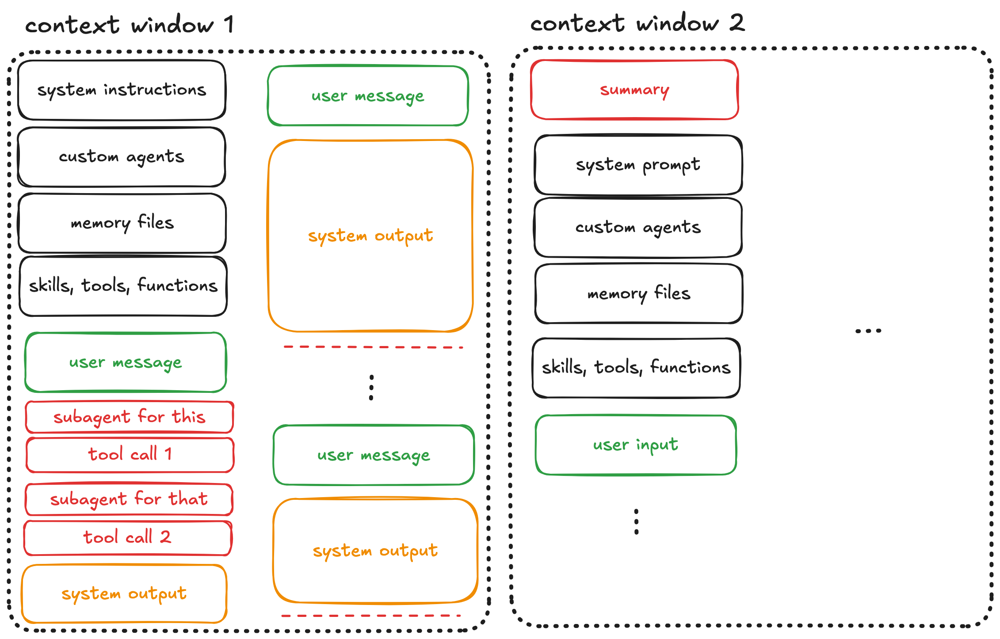
better results
better results
how do we make it better?
early restart
kill the session before the dumb zone
don't wait for quality to degrade, restart at ~40% utilization
one task, one session
cheapest technique, biggest impact
intentional compaction
auto-compaction summarizes blindly and you lose critical details
the agent can write the summary, but you decide what goes in
steer what survives between sessions
use your own /compact with explicit instructions, not on autopilot
spec-driven development
write the spec before you write the code
the spec is the contract between human intent and agent execution
agents work best when requirements are explicit and bounded
each spec gets a fresh context window
Boeckeler, "Spec-Driven Development", martinfowler.com, 2026
research, plan, implement
research with fresh window, explore codebase, read docs, ask questions not opinions
plan with fresh window again, architecture, file changes, test strategy
implement also with fresh window, mechanical execution of an approved plan
you have to review at every phase boundary!
Horthy, "What's Missing to Make AI Agents Mainstream", Heavybit, 2026
HumanLayer, "Advanced Context Engineering for Coding Agents", github.com/humanlayer, 2025
context optimization
remove incorrect information first — it actively misleads
add what's missing — completeness matters
trim noise — less harmful but still wastes budget
target 40-60% utilization for reliable output
Horthy, "What's Missing to Make AI Agents Mainstream", Heavybit, 2026
HumanLayer, "Advanced Context Engineering for Coding Agents", github.com/humanlayer, 2025
ralph loops
while :; do
cat PROMPT.md | claude --print
donewrite a plan or spec first
convert to atomic tasks (in prd and/or spec)
run the loop with fresh context every iteration
track progress in files & git, not chat
Huntley, "Ralph", ghuntley.com, 2025
Kapetanovic, "Ralph Wiggum", antekapetanovic.com, 2026
get shit done (GSD)
all state lives in markdown files, never in context
XML-structured plans split into parallel execution waves
each wave gets a fresh window, atomic git commits as checkpoints
agent reads state on boot — crash, restart, resume
GSD, "Get Shit Done", github.com/gsd-build, 2025
full autonomy?
Gas Town — 20-30 concurrent Claude instances, fully autonomous
OpenClaw — 145K GitHub stars, acquired by OpenAI
impressive results, but the human is fully out of the loop
Yegge, "Welcome to Gas Town", sourcegraph.com, 2026
Steinberger, "OpenClaw", github.com, 2025-26
why I didn't go there
as a researcher, you lose ownership of the idea, hypothesis, and execution
as a developer, you can't read, comprehend, or track the code
no supervision means security concerns
ralph + sandboxing = controlled autonomy
Horthy, "What's Missing to Make AI Agents Mainstream", Heavybit, 2026
planner → generator → evaluator
models are terrible critics of their own output
separate who builds from who judges (GAN-inspired)
evaluator uses Playwright to test the live app, not just read code
solo 20 min, $9, broken — harness 6 hrs, $200, functional
Rajasekaran, "Harness Design for Long-Running Apps", anthropic.com/engineering, 2026
Anthropic, "Building Effective Agents", anthropic.com/engineering, 2024
agentic CRS for e-commerce
the problem
real poc for a real client — taw9eel.com (Kuwait)
multi-agent conversational recommendations, bilingual AR/EN, RAG + reranking
research, architecture, multi-agent design, catalogue pipeline, testing
cannot be solved in one session
architecture
fast-path
intent classification + dispatch
LLM sub-agent
vector search
Cohere API
diversity algo
only the elicitor is an LLM — search, rerank, and selection are direct functions, no LLM overhead
orchestrator classifies intent into 8 categories, delegates via tools, composes final response
Maragheh et al., "Multi-Agentic Recommender Systems", RecSys, 2025
Nie et al., "Hybrid Multi-Agent CRS with LLM", RecSys, 2024
built in 3 phases
ralph loop
prototype
PROMPT.md → iterate → working system
ralph loop
refactoring
new SPEC.md → clean architecture
manual RPI
cleanup
research → plan → polish
each phase gets its own PROMPT.md / SPEC.md — fresh context every iteration
human review between every phase, not just at the end
conversation flow
3. Galaxy Watch 7 — 149 KWD 4. Galaxy Buds Pro — 79 KWD
5. Samsung 65" OLED — 399 KWD
Kapetanovic, "Agentic CRS Prototype", Infobip Confluence, 2026
patterns and guardrails
protocol abstraction — VectorStore protocol, swap ChromaDB → Elastic without touching agents
dependency injection — OrchestratorDeps carries stores, clients, caches, no global state
guardrails — off-topic refusal, bounded elicitor (max 6 msgs), rerank fallback on API failure
caching — EmbeddingCache (LRU), ProfileCache (TTL-300s), no redundant API calls
context engineering
built this in hours, not months
fully functional CRS prototype
built with ralph loops + RPI
Emanuel is thrilled
playbook
agent hygiene
start with /init, then subtract
positive instructions, progressive disclosure
one task = one session, fresh windows
track progress in files, not chat
Pocock, "A Complete Guide to AGENTS.md", aihero.dev, 2025
Mohsenimofidi et al., "Context Engineering for AI Agents in OSS", arXiv, 2025
subtract
over-specified context files reduce agent success by 20%
compaction priority: incorrect → missing → noisy
caveat: tested with LLM-generated files only, not human-curated
less instruction = more autonomy
Gloaguen et al., "Evaluating AGENTS.md", arXiv:2602.11988, 2025
HumanLayer, "Advanced Context Engineering for Coding Agents", github.com/humanlayer, 2025
test oracles
tests are the contract between you and the agent
no test = no success criterion
write tests before you let the agent implement
Anthropic, "Harness Design for Long-Running Apps", anthropic.com/engineering, 2026
state of the art
recursive language models — model manages its own context via sub-LLM calls, main window stays lean
test-time training — compresses context into weights during inference, constant latency at any length
both are automated context engineering — the model decides what stays and what goes
until these ship: context engineering is your edge
Zhang et al., "Recursive Language Models", MIT CSAIL, 2025
Tandon et al., "Test-Time Training for Long Context", Stanford/Berkeley/NVIDIA, 2025
three takeaways
1. context engineering is the #1 AI-era developer skill
2. LLMs are stateless: input quality = output quality
3. structure > volume
thank you
antekapetanovic.com